ベトナムの旅、お次はニャチャンからバスに乗って高原の街、
ダラットへと移動する。
ベトナムの長距離バスって面白くて、客席が2段ベッドのような造りで、ほぼ横になって寝られる構造になっている。
日本もコレやったらいいのに。と思うけど、実際にはカバンや靴を置くスペースがまったくないので結構大変なのだが。
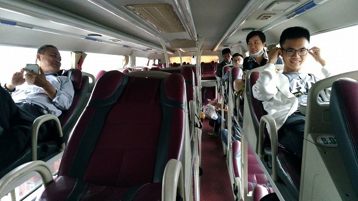
そんなこんなでダラットの街である。
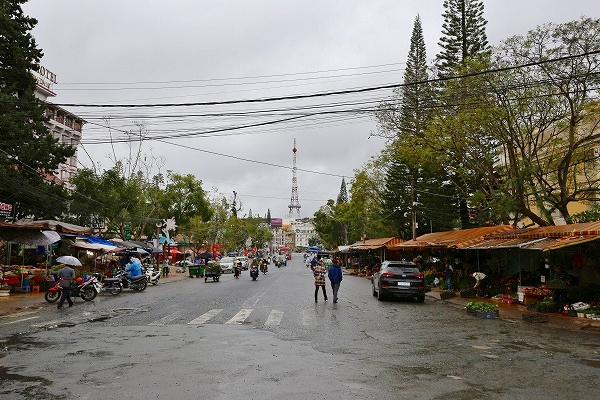
元々
フランス人の避暑地ということでヨーロッパ風の街並みを想像していたが、きっちりベトナムでした。
電波塔だけがエッフェル塔みたいだったけど。
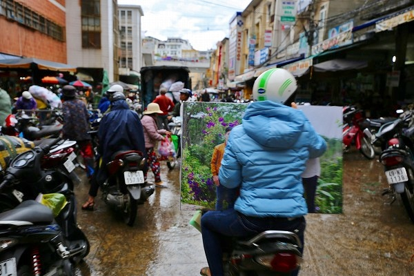
市場周辺はぐちゃぐちゃでした。
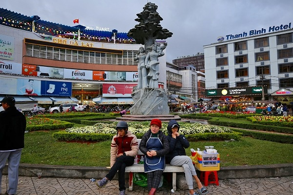
で、ダラットの市場にいってみることにした。
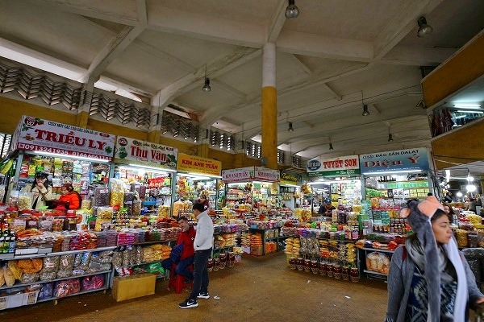
市場は食べ物から衣料、日用品まで様々なモノが揃っていた。
ニャチャンの市場に比べるとはるかに品揃えが多く、明るく清潔な印象だった。
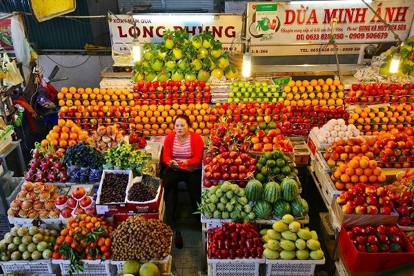
果物も豊富。
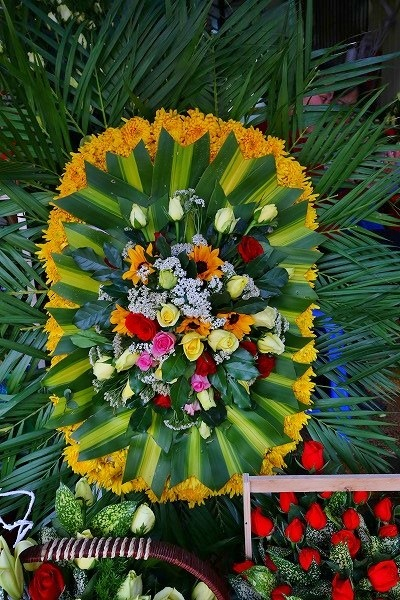
市場の一画には花屋があり、弔慶用の花もたくさん売られていた。
後に詳しく述べるが、ダラットは花の生産が盛んな御土地柄でもあるのだ。
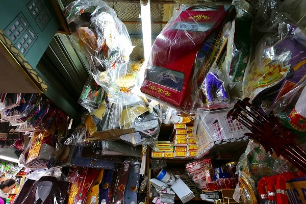
そんな一画に仏具屋がある。
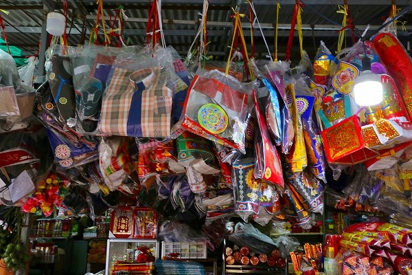
天井からずらりとぶら下がっているのは
死者へ捧げる供物だ。
あの世でご先祖様が生活していくのに困らないように
紙で出来た日用生活品や嗜好品などを燃やしてあの世に届けるのだ。
大抵が衣類や食料、酒や煙草といった日用品なのだが、中には車や家、さらにはパソコンやスマホなどあらゆるモノが紙でつくられているのだ。
これは元々中国人の道教思想によるもので、華南や東南アジアでよくみられる。
ベトナムでも華僑の人々が買い求めているようだ。
以前マレーシアやシンガポールや香港で見かけた際、あまりにも面白いので、お土産に何個か買って帰ろうと思ったら、店の人に持って帰ってはいけないと言われたので諦めてきた。
何でも墓で燃やさずに家に持ち帰ると
良くないことが起こるといわれているのだとか。
一応、お店の人に聞いてみたら「全然大丈夫っすよ」と言われたので（それ以前に「え！コレ買うの？日本人が？」という顔はしていたが…）、資料として買ってみることにした。
これで悪いことがあっても別にいいや。ハナっから悪いことだらけの人生だし…。
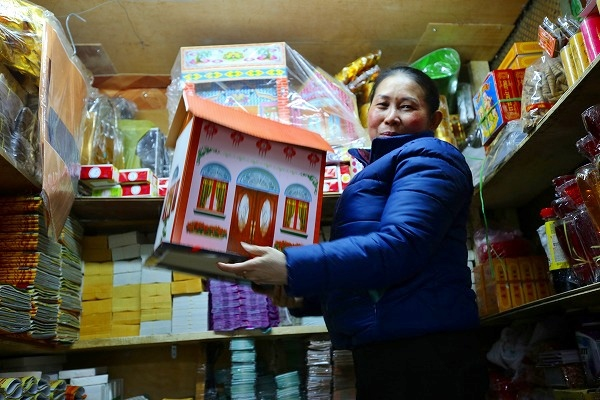
…というわけで、家を一軒買ってみましたよ。
紙細工の家の割にはそんなに安い値段ではなかったです。でもいいんです。貴重な資料だから。
他にも死者に捧げる紙幣やシャツなども買ってみた。
それらは今、私の家に保管してあるのだが、これと言って極端に悪い事は起こって…ない、と思います。…多分。
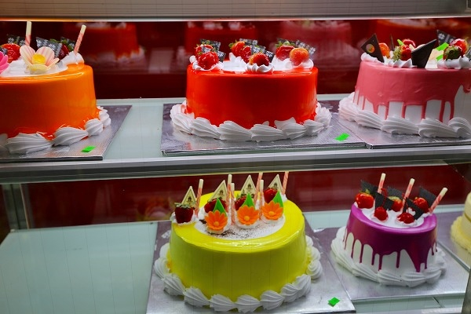
市場のケーキ屋さんで見た凄い色のケーキ。
多分激甘いケーキだと思います…。
次へGO！